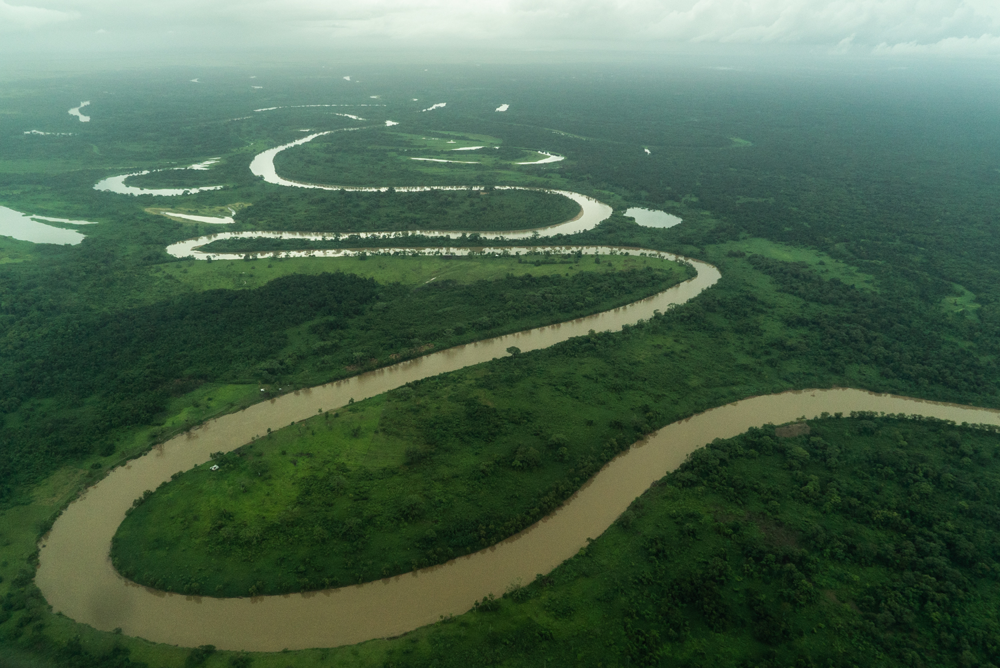

Pagina principal Animales en Honduras Parque nacional la tigra Biosfera del rio Platano
Biosfera del rio Platano
La Reserva de la Biosfera de Río Plátano está localizada en los alrededores de río Plátano en La Mosquitia, la región en la costa caribeña de Honduras. Tiene una extensión de 9,871 km² y abarca tanto montañas como tierras bajas de selva tropical con una gran biodiversidad,123La reserva ha sido declarada Patrimonio de la Humanidad y Reserva de la Biosfera por la Unesco, en el año 1981.4 y si se incluye con la Reserva de la Biosfera Bosawás en Nicaragua que geográficamente son una sola selva, se posicionaria como la segunda selva más grande del hemisferio occidental con más de 33,740 km, después de la selva amazónica en Brasil. Incluso ha participado como una de las siete Maravillas naturales del planeta, además de representar el 7% de la superficie de Honduras,5 las recientes investigaciones confirmaron que hay 3 veces más animales por hectárea cuadrada más que en la amazónia, convirtiéndose en la selva más densamente poblada del continente. La reserva de la biosfera de Río Plátano es habitada por al menos 2000 indígenas que siguen viviendo de su modo tradicional.11Estos grupos étnicos del país mantiene la agricultura y la ganadería en la zona, siendo su principal fuente de sostenimiento ambiental
